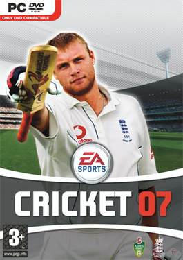

Hobbies
I like playing guitar, writing diary, and doing photography in my leisure time. I love playing Cricket and am an avid reader of sports magazines.
Favorite Sports Magazine
When it comes to gaming, I’m kind of a retro-gamer, who likes spending time playing old hits like GTA San Andreas, Cricket 07, Project IGI and all these.

GTA San Andreas

Cricket 07
Project IGI
A recent game which I have played and cried a lot is Until Then. Do check it out.